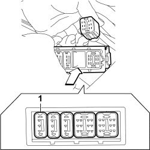
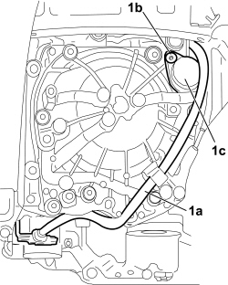

2130A AUTOMATIC TRANSMISSION ASSEMBLY
- Path
- Procedures > 21 GEARBOX UNIT > 2130 AUTOMATIC TRANSMISSION WITH DIFFERENTIAL > 2130A AUTOMATIC TRANSMISSION ASSEMBLY
- Kind
- repair procedure (removal / refitting; the operation number is the code)
- Applies to
- all engines; all production periods
- Interactive page
- https://sloeber94.github.io/elrnDB-fUlss/en/#/179007243
Subtopics (4)
- 2130A38 AUTOMATIC TRANSMISSION FLUID HEAT EXCHANGER - R + R - INCLUDING LEVEL TOP UP IF NECESSARY
- 2130A10 AUTOMATIC TRANSMISSION - R + R
- 2130A40 COOLANT SUPPLY PIPE TO AUTOMATIC TRANSMISSION FLUID HEAT EXCHANGER - R.R.
- 2130A44 AUTOMATIC TRANSMISSION FLUID HEAT EXCHANGER COOLANT RETURN PIPE - R.R.
Applies to: engines: 2.0 16v, 2.0 16V JTD; all production periods
 Removing
Removing
 Refitting
Refitting- Turn the ignition key to the OFF position.
- Disconnect the negative battery terminal.
Connector | Description |
|---|---|
A001 | Battery |
Op. 1048A10 AIR FILTER ASSEMBLY - R.R.
Op. 2135B52 ELECTRONIC AUTOMATIC TRANSMISSION ELECTRIC CIRCUIT -ECU MOUNT R R
Turn the relevant interface module block in the arrowed direction using finger pressure only:
1 - heat exchanger by-pass solenoid - blue - 3 pin

Applies to: engines: 2.0 16v, 2.0 16V JTD; all production periods
Op. 4450B02 LEFT FRONT WHEEL - R.R
Op. 7055B90 LEFT FRONT WHEEL ARCH LINER - R.R.
1. Rlease wiring (1a) from the anchorages, undo bolts (1b) and remove the heat exchanger by-pass solenoid (1c).
Description | Connector |
|---|---|
Automatic transmission solenoid valves | L050 |

Applies to: engines: 2.0 16v, 2.0 16V JTD; all production periods
Refitting
RemovingPosition the heat exchanger by-pass solenoid in its seat.
Description | Connector |
|---|---|
Automatic transmission solenoid valves | L050 |
Tighten the fixing bolt to the recommended torque.
Value daNm | Component | Fastening | dia |
|---|---|---|---|
1,0 | Heat exchanger fluid by-pass solenoid fastening | Bolt |
Attach the wiring to the anchorages.
Op. 7055B90 LEFT FRONT WHEEL ARCH LINER - R.R.
Op. 4450B02 LEFT FRONT WHEEL - R.R
Fit the relevant block in the interface module.
Op. 2135B86 SEALING RINGS ON ELECTRONIC AUTOMATIC TRANSMISSION SYSTEM WIRINGCONNECTOR - REPLACE
Op. 1048A11 AIR CLEANER ASSEMBLY - R R FOR VERSIONS WITH AUTOMATIC TRANSMISSION
Connect the negative battery terminal.
Connector | Description |
|---|---|
A001 | Battery |